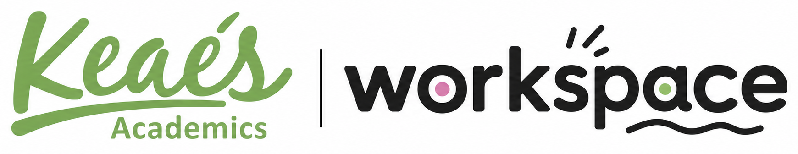

Test Admin
Generate student test links, review submitted results, and inspect Starter Listening performance.
Open
Staff dashboard
Manage student tests, review performance, and add future learning resources, quizzes, and exams here.
Generate student test links, review submitted results, and inspect Starter Listening performance.
Open